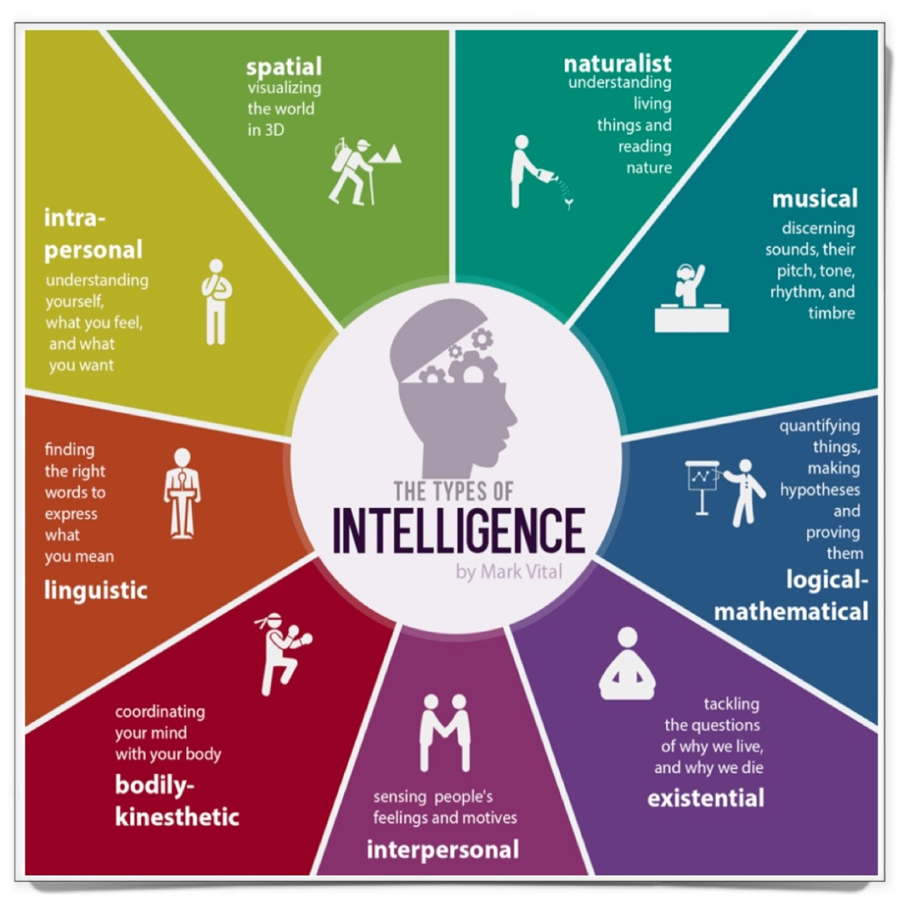

Based on these criteria, Gardner identified eight type of intelligence. He also consider the possibility of a ninth of existential intelligence one that captures the human proclivity to raise and ponder fundamental questions about existence, life, death, finitude.
| Intelligences | Description |
|---|---|
| Linguistic | An ability to analyse information and create products involving oral and written language such as speeches, books, and memos. |
| Logical-Mathematical | An ability to develop equations and proofs, make calculations, and solve abstract problems. |
| Spatial | An ability to recognize and manipulate large-scale and fine-grained spatial images. |
| Musical | An ability to produce, remember, and make meaning of different patterns of sound |
| Naturalist | An ability to identify and distinguish among different types of plants, animals, and weather formations that are found in the natural world. |
| Bodily-Kinesthetic | An ability to use one’s own body to create products or solve problems. |
| Interpersonal | An ability to recognize and understand other people’s moods, desires, motivations, and intentions |
| Intrapersonal | An ability to recognize and understand his or her own moods, desires, motivations, and intentions |
The theory Howard Gardner's has generated abounding controversy. Because most
of psychologists expressed scepticism about theory of multiple intelligences,
in contrast of psychologists expressed scepticism about theory of multiple intelligences, in contrast to educators around the world who have embraced in positive way the idea.
The theory of MI firmly caught on in education because not only comports with teachers intuitions that children are smart in different kinds of ways, the theory also holds out hope,
that if favoured ways of knowing for students are taken into account in curriculum, instructions and assessment it can help that more students can be more effectively.
Therefore this theory provided great extent opportunity to suggest approaches to curriculum, aassessment, pedagogy, learning differences, use of computers, place of the arts—indeed,
almost any issue in which educators are interested. Furthermore, thank to this fact educators felt emancipate to make use of the theory in whatever way they liked.
MI is mainly based on two words: Individuation and Pluralization.
As we now people differ from one another and Gardner says that "there is absolutely no reason to teach and assess all
individuals in an identical way". Therefore Individuation should be based on our understanding of the intellectual profiles of individual learners. And the meaning of
Pluralization is that important ideas, topics, theories and skills ought to be taught in more than one way, and these several ways should activate the multiple intelligences.
Gardner say that if we activate the pluralization an educational approach it is "reaches more individuals since some individuals learn better through stories, others through work of art, or hands on activities or group work-and by argument, each of these approaches activates a distinctive set of intelligence"